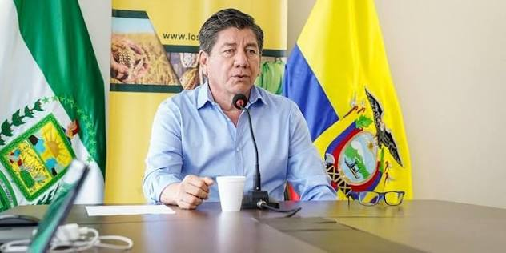
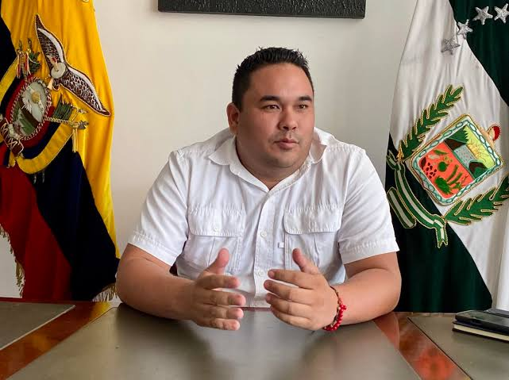
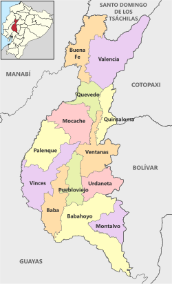

Bienvenido a la Provincia de Los Rios
Está ubicada en la región Costa del Ecuador. Su capital es Babahoyo y se caracteriza por sus tierras fértiles, su clima tropical y su extensa red de ríos, que favorecen la agricultura y la vida de sus habitantes.
Es una de las provincias agrícolas más importantes del país, destacándose por la producción de arroz, cacao, banano, maíz y soya. También sobresale por la ganadería, el comercio y la pesca.
Los Ríos posee una gran riqueza natural y cultural.
Sus paisajes, humedales y tradiciones montubias forman parte de su identidad. Además, sus actividades económicas contribuyen al abastecimiento de alimentos y al desarrollo del Ecuador.
En conjunto, la provincia de Los Ríos es un territorio de gran importancia económica, agrícola y cultural, reconocido por la fertilidad de sus suelos, sus recursos hídricos y la riqueza de sus tradiciones.

Empezó su vida política en las elecciones legislativas de 1994, siendo elegido diputado nacional
en representación de la provincia de Los Ríos por el Partido Social Cristiano.
En las elecciones seccionales de 2000 fue elegido alcalde de Babahoyo bajo la bandera del mismo partido, siendo reelecto
en las elecciones de 2004. Entre los principales focos de acción de su administración estuvieron la pavimentación
de calles en barrios periféricos y el inicio de la construcción de la terminal terrestre de la ciudad.
En 2019, Johnny Terán Salcedo fue elegido prefecto de la provincia de Los Ríos y, en las elecciones seccionales de 2023, fue reelegido para continuar en el cargo durante el período 2023-2027.
Durante su gestión como prefecto, ha impulsado proyectos de infraestructura vial para mejorar la conexión entre los cantones y las comunidades rurales. Entre las obras desarrolladas se encuentran el asfaltado y mantenimiento de carreteras, la construcción de puentes y el mejoramiento de caminos utilizados para transportar productos agrícolas.
En 2024, la Prefectura informó sobre la culminación de varias vías y la entrega de puentes en diferentes sectores de la provincia. También impulsó proyectos relacionados con el deporte, el desarrollo agrícola y el mejoramiento de la infraestructura rural.
En 2025, su administración continuó trabajando en proyectos viales estratégicos, entre ellos el mejoramiento de la conexión entre San Juan, Vinces y Palestina, así como obras para facilitar la movilidad de los habitantes de Babahoyo y Montalvo. Además, promovió acciones de apoyo a los agricultores y al sector productivo.
En 2026, la Prefectura continuó desarrollando programas sociales y educativos. Entre las actividades publicadas en octubre de ese año se encuentran las entregas de dispositivos electrónicos a estudiantes de distintos cantones y la asistencia técnica a productores de cacao para mejorar sus cultivos.
Su actual período como prefecto está previsto para concluir en mayo de 2027. Su gestión se centra principalmente en la infraestructura vial, el apoyo al sector agrícola y la ejecución de proyectos destinados al desarrollo económico y social de la provincia.

El ingeniero Andrés Alberto Rizzo Bajaña es el gobernador de la provincia de Los Ríos y representa al Gobierno nacional en el territorio provincial. Su función principal es coordinar la aplicación de las políticas del Gobierno central y mantener la colaboración entre las instituciones públicas para atender las necesidades de la población. Durante su gestión, ha participado en actividades de coordinación institucional relacionadas con la seguridad ciudadana, la prevención de emergencias y el control comercial. También ha mantenido reuniones con representantes de organismos públicos para coordinar acciones ante posibles riesgos naturales, como el fenómeno de El Niño, que puede provocar inundaciones y afectar a las comunidades de la provincia. Además, la Gobernación trabaja conjuntamente con distintas instituciones para fortalecer la seguridad, apoyar el cumplimiento de las disposiciones gubernamentales y mejorar la atención a los ciudadanos. Su labor es importante para mantener la presencia del Gobierno nacional en Los Ríos y facilitar la coordinación entre las autoridades y la población.
La provincia de Los Ríos fue creada el 6 de octubre de 1860, durante el gobierno de Gabriel García Moreno, quien ejercía como jefe supremo de la República del Ecuador. El decreto de creación fue expedido en la ciudad de Guayaquil.
Según el Censo de Población y Vivienda de 2022, realizado por el Instituto Nacional de Estadística y Censos (INEC), la provincia de Los Ríos tiene 898.652 habitantes, que representan aproximadamente el 5,3 % de la población total del Ecuador. La población se distribuye entre zonas urbanas y rurales. Sus principales centros poblados incluyen Quevedo, Babahoyo y Vinces. La provincia se caracteriza por su diversidad cultural y por la importancia de las comunidades montubias, cuya identidad está estrechamente relacionada con las actividades agrícolas y las tradiciones del campo. El crecimiento de la población ha incrementado la importancia de los servicios públicos, la educación, la salud, la vivienda y la infraestructura vial para el desarrollo de la provincia.
